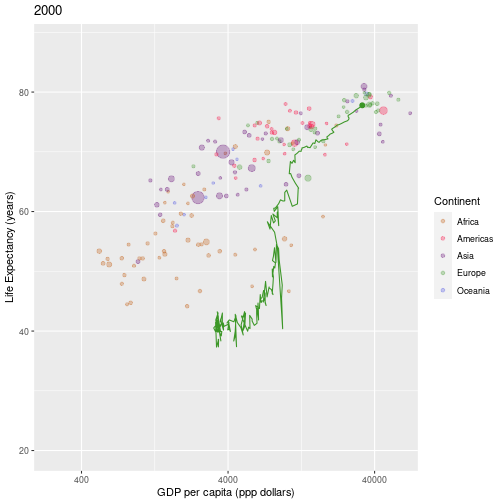

In this section we’ll look at how to interact with the graph. When we click on a graph we will show the name of the country that has been selected, and show this historic data for the country on the graph. For example:
historicdata <- gapminder %>%
filter(year <= 2000) %>%
filter(country == "United Kingdom")
# addHistoricPlot() will add a trace showing the trajectory of a country
# to an existing plot: (makeSemiTransParent will make the points semi-transparent
# so that the historic data is more obvious)
gapminder %>%
filter(year == 2000) %>%
produceGapminderPlot(makeSemiTransparent = TRUE) %>%
addHistoricPlot(historicdata)
You should complete the reactive data lesson before this lesson.
There are a number of steps to go through to get to this point:
historicdata set, to show the “trace”The plotOutput() function (in the user interface) takes a click option, which will return the co-ordinates of the graph when it is selected:
plotOutput("gapminderPlot", click = "plotClick")We can access the value of plotClick using input$plotClick. The click data is returned as a list.
You can also capture double click, hover and brush (e.g. selecting an area) events - see ?plotOutput() for more details.
Capture click data from the graph, by setting the click= option. Use renderPrint() in the server function, and verbatimTextOuput() in the UI to show the captured data. Having clicked on the graph and obtained click data, try selecting another year or continent. You will find that the click data disappears; as soon as the graph is redrawn the click event is invalidated (this is also the case if the graph is resized). We’ll deal with this issue later.
You may have noticed that the click data contains the x and y coordinates of where we clicked. Shiny provides a function, nearPoints(df, coordinfo) which, given a tibble of input data and the clickdata returns a tibble the rows of data for points near the click (you can adjust the definition of “near” using the threshold option, and the maximum number of points returned using the maxpoints option)
Modify your renderPrint() function to return information on the country nearest the click.
As soon as the graph is redrawn, the click event becomes invalidated. Because of the reactive programming approach this means that Shiny recalulates all the clicks dependencies (such as the output), and returns no country information. We need to store the country information, and only update this when a new click event is detected. We need to do two things:
observeEvent() function to observe when a click occurs, and only then put the output of that click into the reactive value we created above.To do this, we modify the server function as follows git:12_observeevent:
# Create a reactive value to store the country we seleect
activeCountry <- reactiveVal()
# Update the value of activeCountry() when we detect an input$plotClick event
# (Note how we update a reactiveVal() )
observeEvent(input$plotClick,
{
nearCountry <- nearPoints(plotData(), input$plotClick, maxpoints = 1)
activeCountry(as.character(nearCountry$country)) # Extract just the country name and assign it to activeCountry()
})
# Create a reactive value to store the country we seleect
activeCountry <- reactiveVal(value = NA)We’ll also modify output$clickData to only display the active country:
output$clickData <- renderPrint(({
activeCountry()
}))Run your app and check everything works. Notice that activeCountry() is initalised to NULL. If we click on the graph where there isn’t a visible country, nearPoints() will, as we saw earlier, return a tibble with 0 rows. When we extract the country from the tibble, using the $ operator, it will return a character vector of length 0.
codeExample.R, and the example at the top of this lesson show how to add the historic “trace” data for a country. We need to create a tibble containing this historic data, and then add this to the plot.
Create a reactive data set, using reactive() which contains the historic data (i.e. for all years up to and including the selected year) for the currently selected country. If no country is selected this will have 0 rows.
The final thing to do is to add the historic data to the plot, if a country is selected. Modify the renderPlot() to produce the regular graph if the length of activeCountry() is 0 (i.e. no country is selected), and to produce the plot including the historic data otherwise (the code example at the start of the episode shows how to add historic data to a plot).